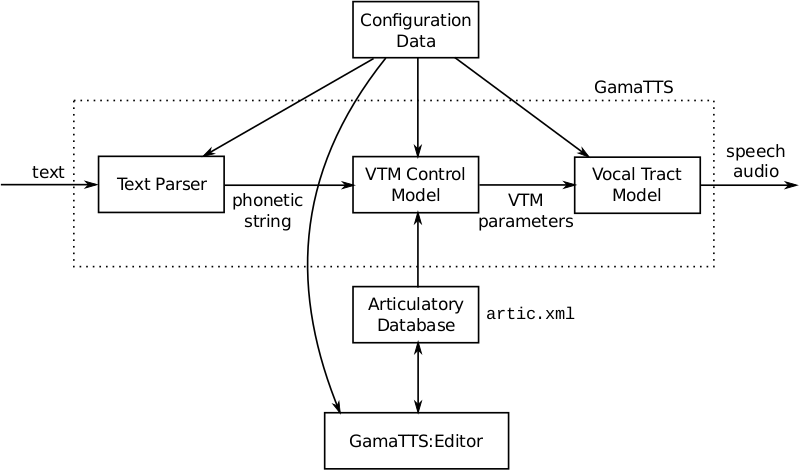

About GamaTTS
History
GamaTTS is an experimental articulatory speech synthesizer. It started as a C++ port of Gnuspeech. The port is based on the original TTS_Server developed for NeXTSTEP, written in C (70% in lines of code) and ObjC (30%).
GamaTTS:Editor was later developed to edit the articulatory database, using parts of the source code from Monet (written in ObjC), an editor in Gnuspeech. During the development of the editor, the available documentation for Monet was used as a reference.
Since GamaTTS is based on Gnuspeech, the credit (for the things that work) goes to Gnuspeech.
But GamaTTS is an experimental software, it is not compatible with Gnuspeech anymore, even though currently the changes are minimal.
Notes:
- "Gama" is the portuguese for gamma.
- The documentation for Gnuspeech is very relevant and interesting.
Description
The main modules are:
- Text Parser:
Converts the input text to a phonetic string. This string contains phonemes and control codes for example to indicate phoneme duration or the start of a word. - VTM Control Model:
Converts the phonetic string to vocal tract model parameters. This module controls the vocal tract model. - VTM (vocal tract model):
Converts the VTM parameters to speech audio, using a simulation of the acoustics of the human vocal tract. - GamaTTS:Editor is used to modify the articulatory database, because manually editing the database would be very difficult.
The VTM parameters can be adjusted to produce a "schwa" sound, for example. If the parameter values remain constant, the output will be a continuous sound. In the Control Model, such a configuration of the VTM is called a Posture.
To produce speech, the VTM parameters must change along the time (this is called articulation). In the Control Model, the way the parameters change from Posture to Posture is defined by Transitions.
Transitions use Transition Points to define the curve that will control the VTM parameter along the time. The time of each Point can be defined using constants, but this is not very flexible. For this reason the Control Model uses Equations to define the times. The Equations use formulas to calculate time, using as parameters the durations of the Postures involved in a Transition.
The Control Model must decide which Transition will be used for each Posture sequence and for each parameter. The Rules are used to do this selection, they contain boolean expressions to match a sequence of Postures. Boolean expressions can also match Categories, which are groups of Postures.